Explore Liverpool
A Brief History
Liverpool rose as Britain's major Atlantic port in the 18th and 19th centuries, shipping cotton, slaves, and emigrants before becoming a centre of transatlantic liners. Albert Dock warehouses, two cathedrals, and football clubs record mercantile wealth, Irish immigration, and post-industrial culture recognised by UNESCO on the waterfront. Municipal archives, parish records, and surviving architecture help explain how the city connected to wider regional trade routes, court patronage, and modern civic rebuilding after industrial and wartime change.
Attractions Map
Top Sights & Activities
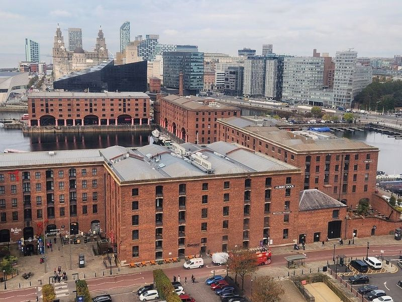
Royal Albert Dock Liverpool
Royal Albert Dock Liverpool is a vibrant waterfront area that has undergone a renovation, shedding its industrial past to become one of Liverpool's most popular tourist attractions. It features a mix of museums, art galleries, family-friendly restaurants, and shops. The dock boasts the largest collection of Grade-listed buildings in the UK and offers picturesque waterfront views.
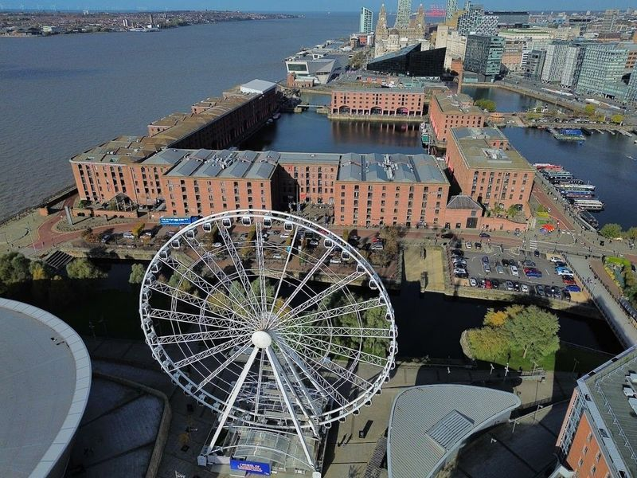
Wheel of Liverpool
The Wheel of Liverpool is a popular waterfront Ferris wheel that stands at an impressive 60 meters high. It features 42 glass capsules, including a luxurious VIP option with a glass floor, leather interior, and even a DVD player. Visitors can enjoy panoramic views of the city and the World Heritage Site waterfront during the approximately 10 to 12-minute ride, which includes three revolutions.
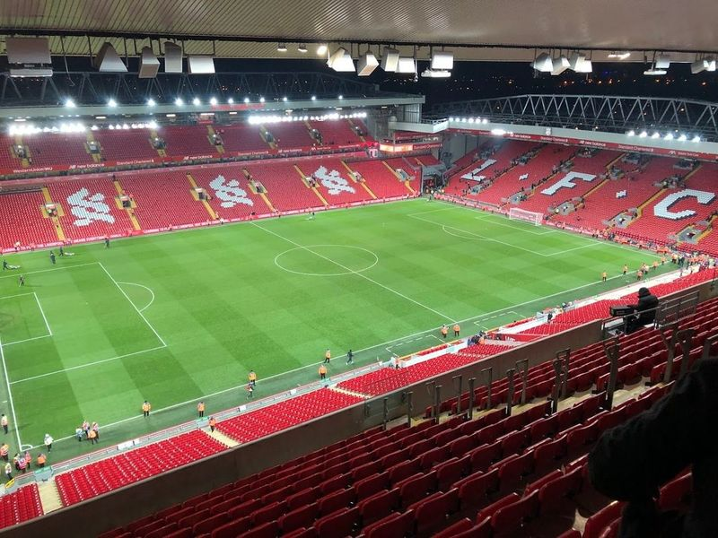
Anfield
Anfield is a renowned football stadium and the home of Liverpool FC, one of England's most successful football clubs. Since its establishment in 1892, Anfield has been witness to numerous historic moments in the club's history. The stadium, with over 50,000 seats, is easily accessible and offers a variety of food kiosks for visitors. It also houses the Liverpool FC museum, showcasing monuments dedicated to the team and the sport.
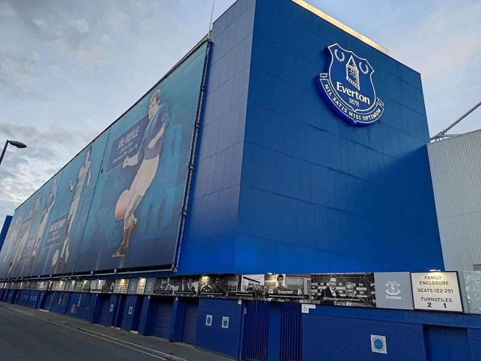
Goodison Park
Goodison Park, located in Liverpool, is the historic home stadium of Everton Football Club. Constructed in 1892, it has a rich football history and can accommodate over 40,000 fans. The stadium's Bullens Road Stand and Gwladys Street End contribute to its electrifying atmosphere. Despite being an old stadium, its close proximity to the pitch provides an intimate experience for spectators. The stadium tour is recommended for those interested in exploring its heritage.
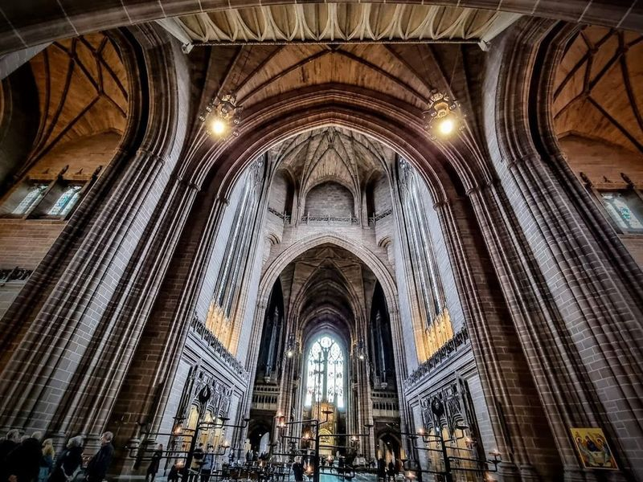
Liverpool Cathedral
Liverpool Cathedral, also known as the Anglican Liverpool Cathedral, is a grand 20th-century place of worship that boasts the world's highest Gothic arches and a towering viewing tower. Despite its ancient appearance, it was actually completed in 1978 after 74 years of construction. Designed by Sir Giles Gilbert Scott, this masterpiece of Gothic Revival is Britain's largest cathedral and features contemporary visual art installations that add to its unique atmosphere.
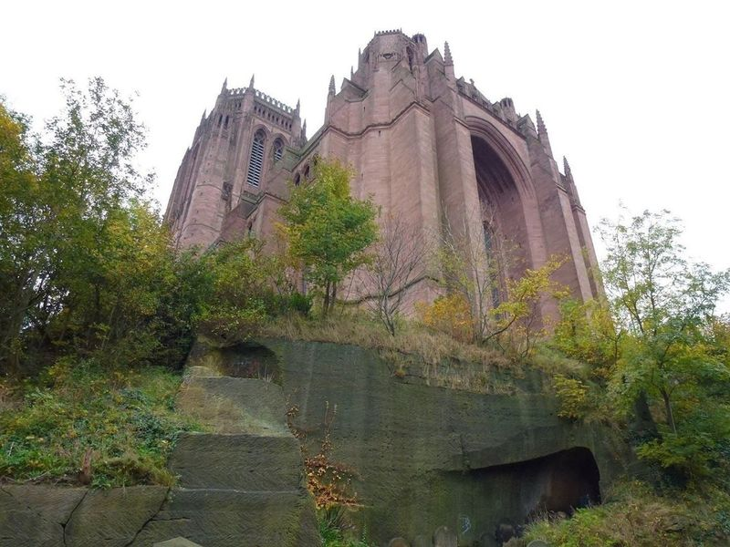
Saint James' Gardens
St James Mount And The Gardens in Liverpool is a former cemetery with historical architecture and a tranquil atmosphere. It's often mistaken as the source of sandstone for the UK's largest cathedral, but that honor goes to another quarry. The park, listed as Grade I, offers a serene escape from the city with its lined stone paths and arches. Visitors can explore the system of broad ramps lined with catacombs for an adventurous experience.
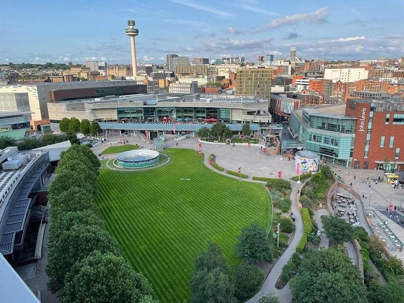
Liverpool ONE
Liverpool ONE is a vibrant and popular open-air complex located in the heart of Liverpool City Centre. It has quickly become one of Europe's top retail destinations, offering a wide range of global retailers, restaurants, bars, and entertainment options such as mini golf and a cinema. Families are drawn to its family-friendly atmosphere with activities for children at Chavasse Park and plenty of dining options. The 1.
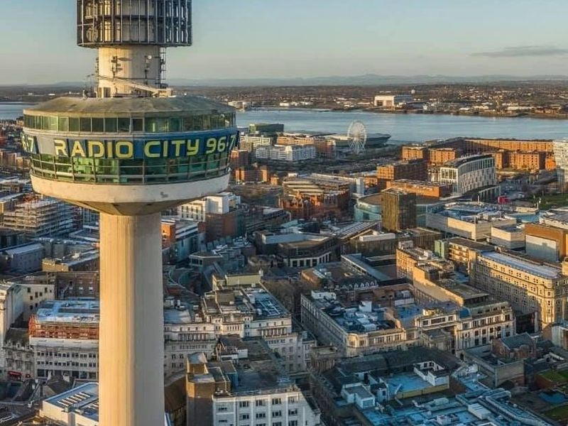
St Johns Beacon
Ascend to the top of St Johns Beacon, also known as the Radio City Tower, and treat yourself to panoramic views of Liverpool and its surroundings. Standing at 138 meters tall, this landmark offers a 360-degree viewing gallery that showcases the beauty of Merseyside, Wirral, North Wales, and even Lancashire on clear days. From this vantage point, marvel at famous landmarks and cityscapes while gaining a new perspective on the region's geography.
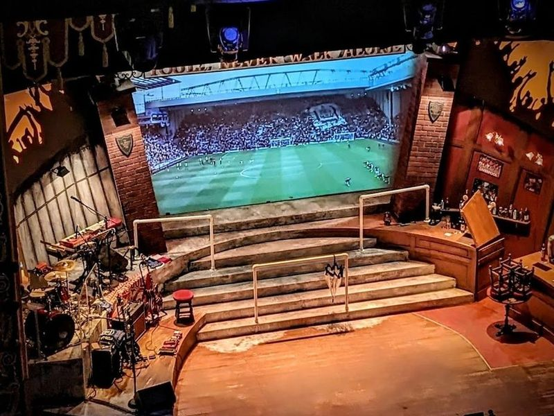
Royal Court Theatre
The Royal Court Theatre, a 1930s venue located on Roe Street, offers a unique and friendly theatre experience in Liverpool. The historic art deco building has been modernized while maintaining its traditional charm. The theatre presents a diverse program of musicals, drama, and comedy with a strong local presence including cast and crew members from Liverpool. Nautical themes throughout the venue pay homage to the city's maritime heritage.
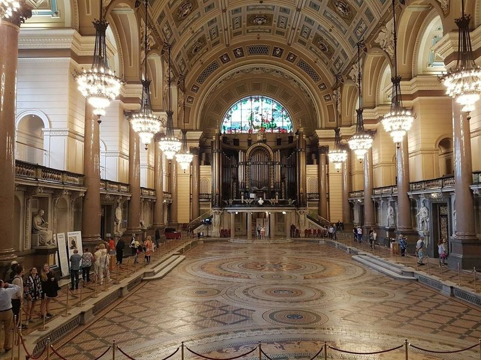
St George's Hall
St George's Hall is a grand and civic venue located in the heart of Liverpool. This neoclassical building houses a heritage center, an on-site cafe, and various event spaces. It stands as a testament to the city's wealth and civic aspirations in the 19th century. The hall hosts a range of events and concerts, with its decorated Great Hall being particularly noteworthy.
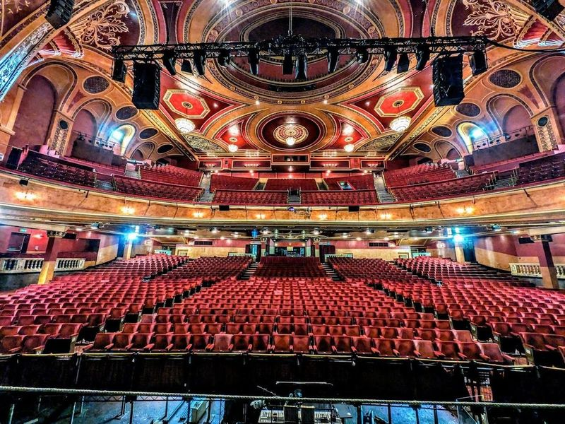
Liverpool Empire
The Liverpool Empire Theatre is a modernized venue hosting touring acts such as musicals, ballets, and pantomimes. With its classical architecture, it is a center for talented theater individuals in the city. One trending performance is the famous Rocky Horror Show directed by Christopher Luscombe and featuring Strictly Come Dancing winner Ore Oduba. The show tells the story of two college kids who stumble upon a creepy mansion and meet Dr FranknFurter.
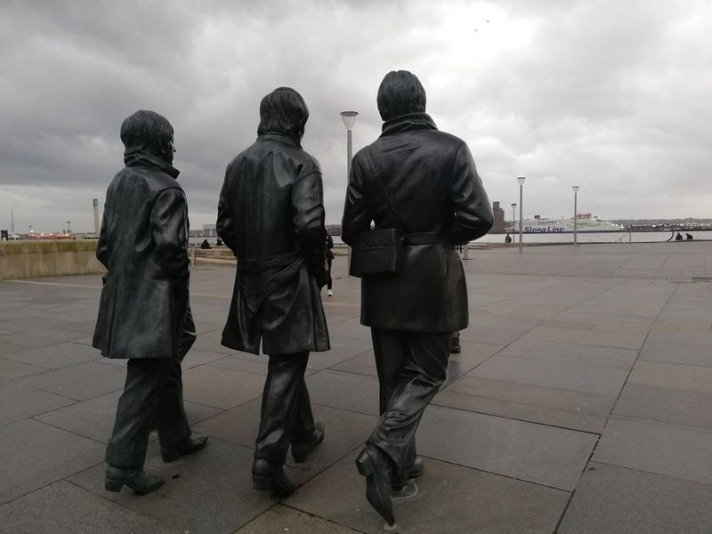
The Beatles Statues
The Beatles Statue, unveiled in 2015, is a popular bronze sculpture of the legendary rock group located in central Liverpool. This statue created by sculptor Andy Edwards is a must-visit for fans and tourists alike. It's a common spot for snapping selfies and experiencing a unique piece of memorabilia related to The Beatles' rich musical heritage in their hometown.
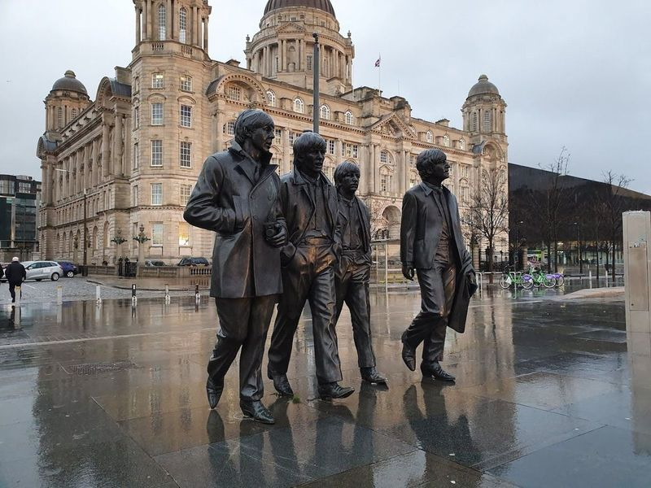
Liverpool Waterfront
Liverpool Waterfront is a vibrant urban area along the river, offering a variety of dining options, bars, cafes, and cultural attractions. The waterfront trail showcases landmarks such as the Liver Building, Cunard Building, and Port of Liverpool. Visitors can explore famous attractions like Albert Dock and Tate Liverpool while enjoying scenic views of the River Mersey. Additionally, the area is home to green spaces like Otterspool Park and Sefton Park with its renowned Palm House.
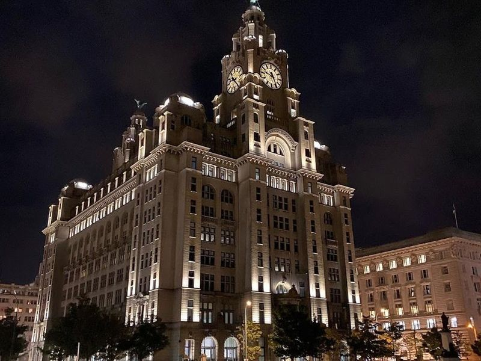
Royal Liver Building
The Royal Liver Building, constructed in 1911 and once the tallest building in Europe, is a Grade listed structure and part of Liverpool's waterfront Three Graces. Adorned with domes and a clock tower featuring the city's symbol, the liver bird, it has become a major tourist attraction. Visitors can enjoy the RLB 360 experience offering historical tours, panoramic views from the tenth and fifteenth floors, as well as a captivating digital light show inside the clock tower.
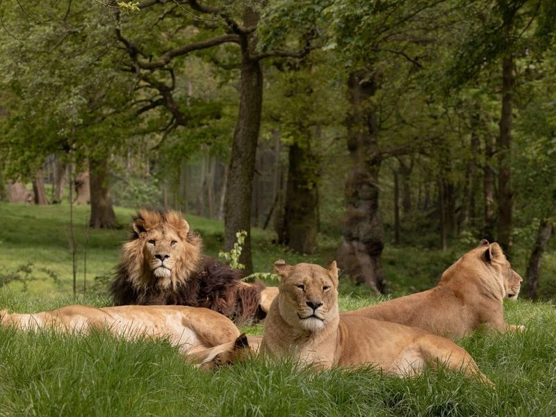
Knowsley Safari
Knowsley Safari is a wildlife park located near Liverpool, England. Visitors can view roaming animals from the safety of their cars or tour buses, and also explore a walk-around zoo and enjoy fair rides. The park has been open for over 40 years and is home to over 700 animals including lions, sea lions, rhinoceros, giraffes, zebras, meerkats, birds of prey and many more. One of its newest additions is the Amur Tiger.
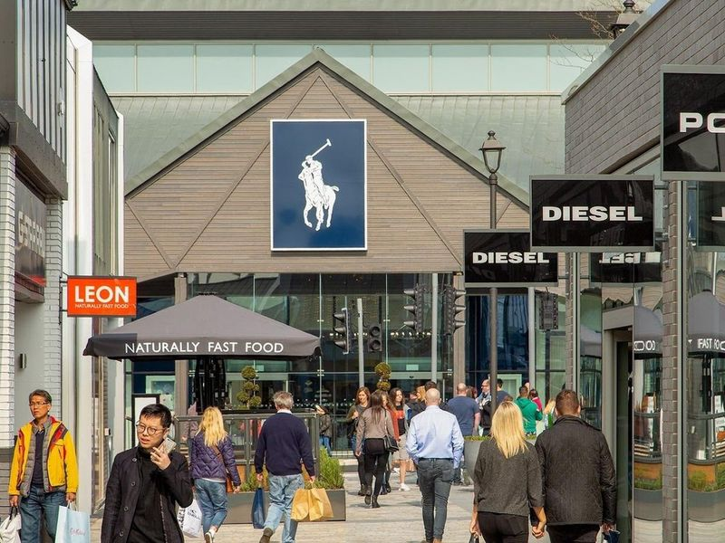
Designer Outlet Cheshire Oaks
Cheshire Oaks Designer Outlet is a sprawling village-style site offering discounts on designer and high-street fashion brands. With over 140 boutiques, restaurants, and cafes spread across a quarter-million square feet of retail space, it's the largest outlet of its kind in the UK. From athletic labels like Nike and Adidas to fashion brands such as Burberry and Hugo Boss, there's something for every taste.
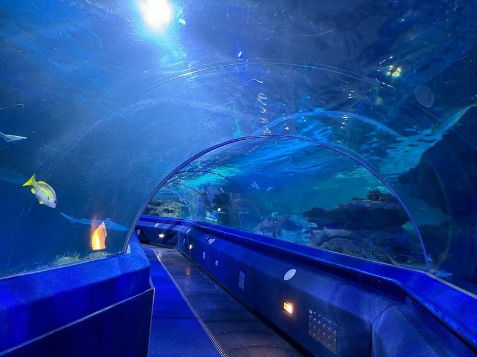
Blue Planet Aquarium
Blue Planet Aquarium is a must-visit for aquarium and fish tank enthusiasts, offering over 100 living displays, including one of Europe's largest shark collections. Visitors can explore the Flooded Forest to see exotic freshwater fish from South America and stroll through the 71m long Underwater Shark Tunnel where sharks and fish swim overhead.
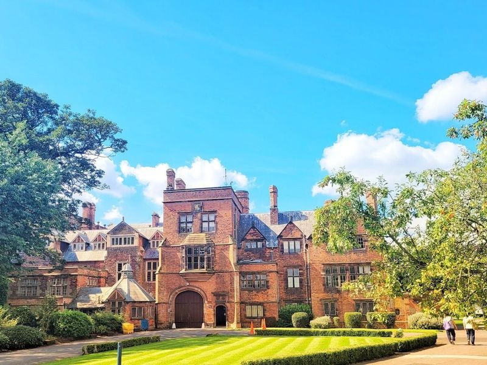
Croxteth Hall And Country Park
Croxteth Hall And Country Park, located on the northwest outskirts of the city, is a historic estate featuring an opulent hall, Victorian walled garden, and a working farm. Visitors can explore the diverse landscape of woodlands, ponds, streams, and farmlands as well as enjoy activities such as Jungle Parc Liverpool's treetop courses.
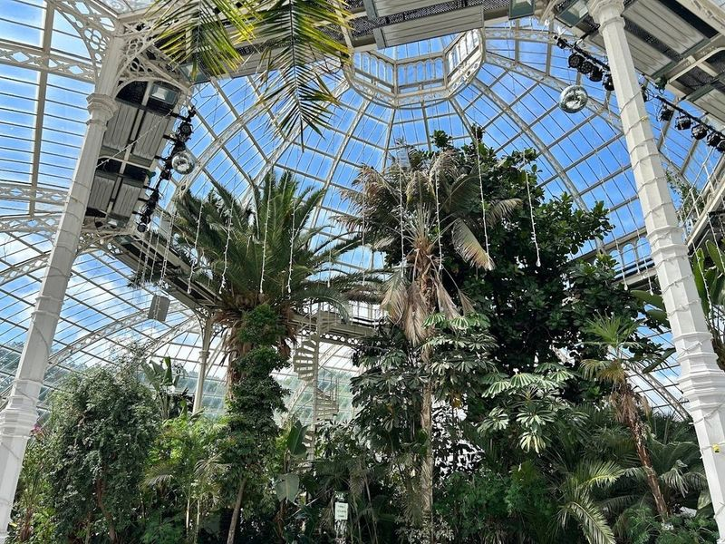
Sefton Park Palm House
Sefton Park Palm House is a Victorian glasshouse located in Sefton Park, offering free admission to visitors every day. The Grade II* listed building features an elegant design that shines in the summer sun. Inside, the multi-million pound restored exotic palm house showcases vibrant vegetation in themed botanical displays, creating a tranquil escape from the city. The venue hosts various events throughout the year, including music and dance performances like the Free Sunday Concert.
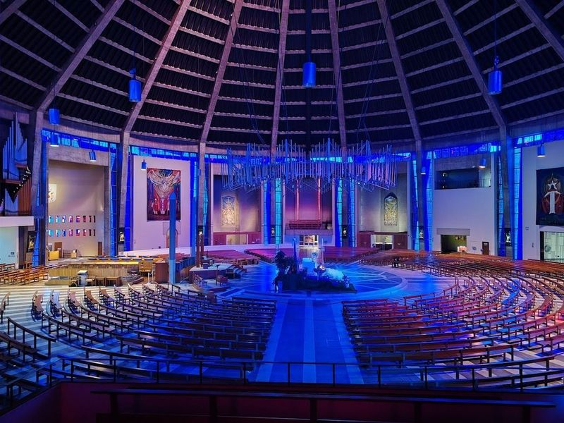
Liverpool Metropolitan Cathedral
Liverpool Metropolitan Cathedral is a circular Roman Catholic place of worship featuring contemporary art. It was built in the 1960s after previous attempts to construct a cathedral fell through. The modern gothic revival architecture makes it a attraction in Liverpool, especially for those interested in religious and historical landmarks.
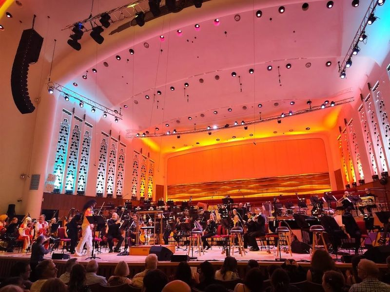
Royal Liverpool Philharmonic
The Royal Liverpool Philharmonic is a historic concert venue that has been showcasing live classical and modern music, comedy, and cinema since the 1930s. With a seating capacity of 1790, it stands as a symbol of the city's rich arts, music, and culture scene. The original art deco style building holds Grade II listed status and offers visitors an elegant setting to enjoy performances.
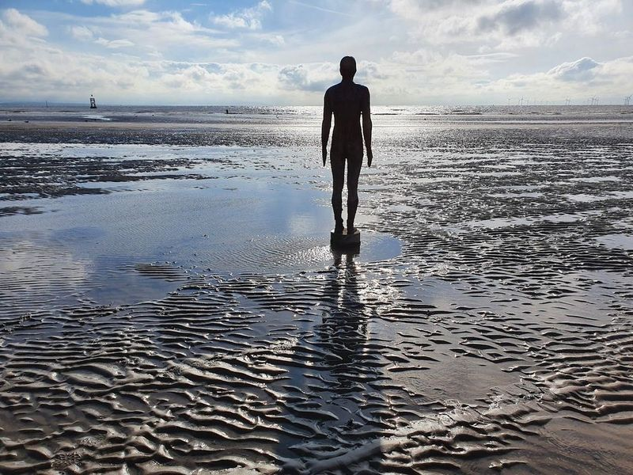
Another Place by Antony Gormley
Another Place by Antony Gormley is a captivating art installation featuring 100 life-size male statues made of cast iron. These statues stretch for about 1.5 miles along the picturesque estuary at Crosby Beach. The sculptures, created by the renowned artist behind the Angel of the North, offer a unique and surreal experience as they are partially submerged in sand and sometimes surrounded by water.
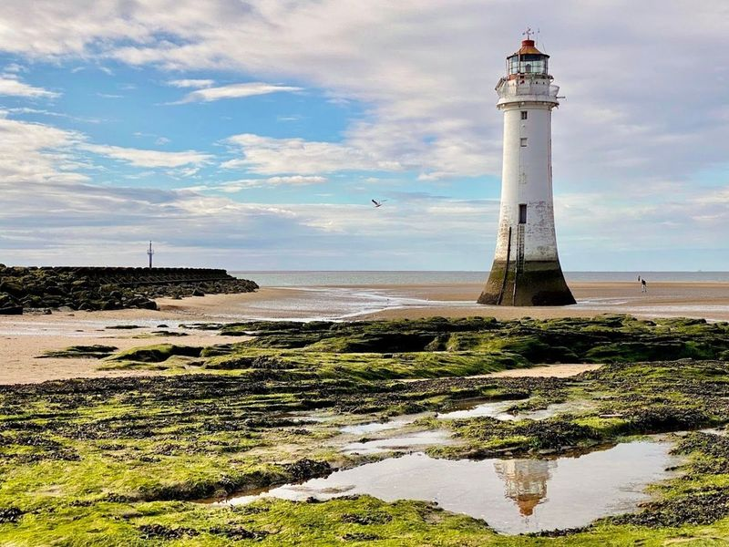
Fort Perch Rock
Fort Perch Rock, a historic red sandstone fort constructed in the early 19th century as a coastal defense battery against potential French invasion, now serves as a museum and popular tourist attraction. The fort houses the Aviation and Archaeology Museum, featuring exhibits on Luftwaffe over Merseyside and the maritime history of ships like Titanic and Lusitania.
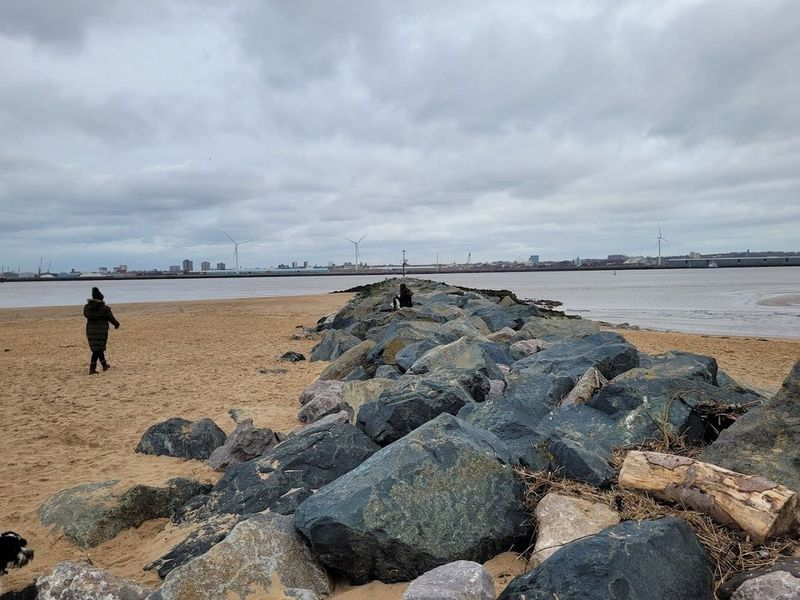
The Black Pearl
The Black Pearl is a unique treasure located at New Brighton beach in Wallasey, constructed by local artists using items found on the beach. This famed pirate ship features tall masts with pirate flags and a wooden hull, attracting visitors of all ages. The picturesque shoreline offers an ideal location for leisurely hours, adorned with unique artifacts made from recycled materials.
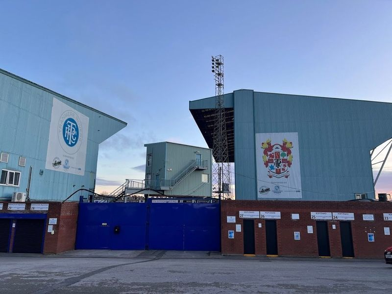
Tranmere Rovers Football Club
Tranmere Rovers Football Club, located between Liverpool and Manchester, offers a traditional football experience with its four-sided ground. The stadium features a recreation center, soccer schools, and a merchandise shop. Despite the challenge of finding nearby parking, the area has good transport links to both cities. The club provides engaging activities for people with learning disabilities and creates a vibrant atmosphere during matches.
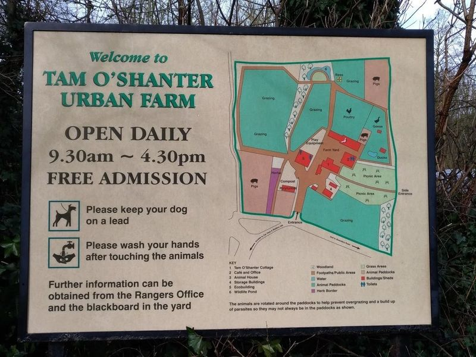
Tam O'Shanter Urban Farm
Nestled on the scenic Bidston Hill, Tam O'Shanter Urban Farm is a delightful free attraction that welcomes visitors every day of the year, except Christmas. This charming farm features an array of friendly animals such as goats, pigs, ponies, and rabbits that are sure to enchant younger guests. For just a pound, children can purchase animal feed to hand-feed these adorable creatures. The farm also boasts a picnic area and a café for refreshments after exploring.